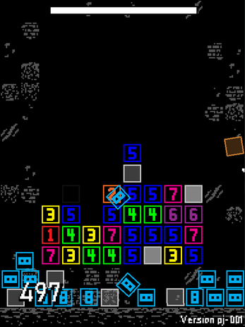

ShipOS is a virtual operation system im currently working on. Unlike its predecessor CrappleOS, it interprets code through tokenization, has scoped variables and recursive function calling.
09 03 22
CrappleOS an virtual operating system and is fully capable of saving, loading, running and editing file. For writing programs it uses my very own custom language called JANK, which you can find documentation included in the download .zip.
A a quirk to be careful of is that there is some weirdness to writing code in the very first and last line, and so its standard practive to leave these blank.
The lessons I learnt working on CrappleOS have aided me in greatly in my new virtual OS project ShipOS.
You can view the changelog here
25 04 21 09 03 22
Previously known as PLayerforms, EasyForms is a highly flexable tool for quickly creating functional and dynamic forms and windows within Gamemaker.
06 08 20 09 03 22
Crazy Eight Collector is a small falling block game that I made for the 33rd GM48. I later released the game, more polished and balanced, to itch.io for a dollar.
25 01 20